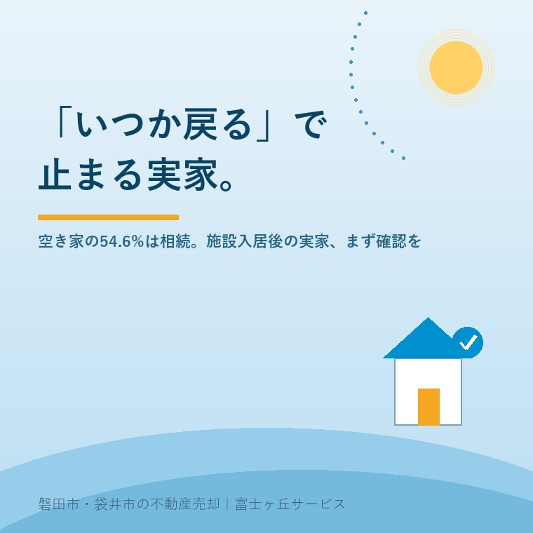

2026年7月15日｜カテゴリ：実家じまい・空き家

この記事の要点
Q. 親が施設に入って空き家になった実家、誰に相談すればいい？
A. 介護施設の入居がきっかけの空き家は、不動産の知識だけでなく、介護費用や相続の見通しもあわせて考える必要があります。磐田市・袋井市では、介護施設の運営から不動産事業を始めた富士ヶ丘サービスのような「介護×不動産」専門の会社に相談するという選択肢があります。
「親が施設に入ったから、実家は空き家になった。でも、まだ売る決心はつかない」。そう感じているご家族は、決して少なくありません。三井住友信託銀行の調査月報（2026年1月号）によると、全国の空き家のうち相続によって取得されたものは54.6%と半数を超え、所有者の約3割は空き家の所在地まで車や電車で1時間を超える遠隔地に暮らしています。「近くに住んでいないから、つい後回しになる」という構図は、決して特別な事情ではないのです。
先の調査月報では、いわゆる「純粋空き家」（賃貸・売却用でも別荘でもない、使い道の決まっていない空き家）が2000年の212万戸から2023年には386万戸へと1.8倍以上に増加し、全住宅の17戸に1戸を占めるまでになったと分析しています。その取得経緯を見ると、相続によるものが54.6%と過半数を占め、購入や新築で得た住まいよりも、親から受け継いだ実家のほうが空き家になりやすい構造が浮かび上がります。所有者の約3割が遠隔地に住んでいるという事実も、「気にはなっているが、頻繁には見に行けない」という多くのご家族の状況と重なります。
これは、磐田市・袋井市に実家をお持ちで、進学や就職を機に県外・市外へ出られたご家族にとっても他人事ではありません。ふだんは離れて暮らしているからこそ、実家の変化に気づきにくく、気づいたときには対応が後手に回ってしまう、という声を私たちもよくお聞きします。
総務省の住宅・土地統計調査に基づく分析では、空き家を売らない理由として「物置として必要だから」が最も多く挙げられ、「解体費用をかけたくないから」が約47%、「更地にしても有効な活用方法がないから」が約37%で続きます。これらは決して非合理な判断ではなく、それぞれのご家庭にとって現実的な理由です。ただし、こうした理由が積み重なるうちに、結論を出さないまま時間だけが過ぎてしまうケースも少なくありません。
施設に入居したご本人が「まだ売らないでほしい」と望むことも珍しくありません。新しい生活に慣れるまでは自宅を手元に残しておきたいという気持ちは自然なものですし、ご家族としても本人の意向を尊重したいと考えるのは当然です。一方で、「いつか戻るかもしれない」という前提のまま数年が経過すると、建物の傷みが進み、いざ判断するときの選択肢（賃貸に出す・売却する・解体するなど）が狭まってしまうことも起こり得ます。今すぐ結論を出す必要はなくても、「今、実家がどんな状態にあるか」を定期的に確認しておくことは、将来の選択肢を狭めないために役立ちます。
実家の今後というと、つい「売却するかどうか」の二択で考えてしまいがちですが、選択肢はそれだけではありません。すぐに売る決心がつかない場合でも、賃貸に出して収益化する、磐田市・袋井市それぞれが運営する空き家バンクに登録して移住希望者とのマッチングを待つ、あるいは当面は月1回の見回り・通風だけを続けながら判断を先送りするなど、いくつかの中間的な選択肢があります。どれを選ぶにしても大切なのは、「今、選べる状態にあるかどうか」を把握しておくことです。建物の傷みが進んでからでは、賃貸に出すにも修繕費がかさみ、空き家バンクに登録するにも改修が必要になるなど、選択肢そのものが狭まってしまいます。
施設に入居したご本人が実家への愛着から売却に消極的な場合、無理に説得しようとするよりも、「なぜ残しておきたいのか」を丁寧に聞くところから始めることをおすすめします。仏壇や思い出の品の行き先が決まっていないだけ、というケースも少なくなく、そうした個別の懸念が解消されると、話が前に進みやすくなることがあります。家族会議の場では、結論を急がず、まず「今の実家の状態」と「これからの選択肢」を家族全員で共有することから始めるとよいでしょう。
ここで注意したいのが、相続税の「小規模宅地等の特例」です。この特例は、被相続人（亡くなった方）が住んでいた土地の評価額を最大80%減額できる制度ですが、老人ホーム等への入居によって空き家になっていた場合でも、一定の要件を満たせば適用対象になり得ます。国税庁の見解によると、要件はおおむね次の2点です。
| 要件 | 内容 |
|---|---|
| 要介護認定等 | 被相続人が相続開始の直前において、介護保険法上の要介護認定・要支援認定などを受けていたこと（施設入居時点で受けている必要はなく、相続開始時点で判定される） |
| 施設の種類 | 老人福祉法・介護保険法等で定められた特別養護老人ホームやサービス付き高齢者向け住宅などに入居していたこと |
加えて、空き家になった自宅を事業用に貸し出していないこと、そして被相続人以外の誰かがその家に住んでいないことも条件になります。たとえば、施設に入居した親御さんの実家に別の親族が住み始めた場合は、この特例の対象から外れる可能性があるため注意が必要です。この特例はあくまで「相続税の計算上の話」であり、「実家を持ち続けるための制度」ではない点にも留意してください。適用の可否は個々の事情によって細かく変わるため、必ず税理士にご確認ください。
結論を急ぐ必要はありませんが、いずれ判断するときのために、選択肢ごとの特徴をあらかじめ知っておくと、いざというときに落ち着いて話し合いやすくなります。
| 選択肢 | メリット | 気をつけたいこと |
|---|---|---|
| 持ち続ける（現状維持） | 思い出の場所を残せる。急いで決めなくてよい | 固定資産税・維持管理の手間と費用が継続的にかかる |
| 賃貸に出す | 収益が見込める。建物の劣化を遅らせられる | 入居前の修繕費がかかる場合がある。管理の手間が生じる |
| 空き家バンクに登録 | 移住希望者とのマッチングを待てる。自治体の支援制度を使える場合がある | 登録してもすぐに借り手・買い手が見つかるとは限らない |
| 売却する | 維持管理の負担から解放される。まとまった資金になる | 手放す決断そのものに、家族の心理的な整理が必要になる |
どの選択肢が正解ということはなく、ご家族の状況や実家の状態によって最適な答えは変わります。大切なのは、選択肢を知らないまま「なんとなく持ち続ける」状態が続かないようにすることです。
磐田市には空き家バンクや、危険な状態の空き家の解体を後押しする補助金制度があり、袋井市にも移住者向けのリフォーム補助や空き家除却支援など、複数の空き家関連制度が用意されています。ただし、こうした制度の多くは「解体する」「移住者に貸す」など、すでに方向性が決まった後の話です。多くのご家族にとって本当に難しいのは、そこに至る前の段階、つまり「このまま持ち続けるのか、活かすのか、手放すのか」を決めかねている時期ではないでしょうか。
富士ヶ丘サービスは、磐田市見付を拠点に介護施設の運営から不動産事業を始めた会社です。「親をどの施設に入れるか」という相談を日々受けてきたからこそ、実家が空き家になっていく過程やご家族の迷いを、不動産の話だけでなく、介護や暮らし全体の視点も交えてお聞きすることができます。地域に根ざした立場から、「高く売る」ことだけでなく「家族が困らない選択」を一緒に考えることを大切にしています。
介護の相談窓口と不動産の相談窓口が別々の会社だと、「施設の費用は分かったが、実家をどうするかは誰に聞けばいいのか分からない」という状態になりがちです。富士ヶ丘サービスであれば、施設入居にまつわる費用感や今後の見通しも踏まえたうえで、実家の売却時期やタイミングについてご相談いただけます。
実家じまい相談室｜富士ヶ丘サービス
「まだ決めなくていい」から、まず現状の把握を。
施設入居がきっかけで空き家になった実家について、名義・相続登記・境界といった売却時の支障や、今のうちに確認しておきたいことを、宅建士が机上調査してお伝えします。強引な売却営業は行いません。
価格が気になる方は売却前カルテ（作成料0円）もご利用いただけます。対応エリア：磐田市・袋井市・掛川市・森町・浜松市一部｜富士ヶ丘サービス株式会社（静岡県知事 (2) 第14083号）
「いつか戻るかもしれない」という気持ちを否定する必要はありません。ただ、その気持ちのまま実家の状態を確認せずに時間が過ぎてしまうことだけは避けたいものです。まずは今の実家がどんな状態にあるかを知ることから、始めてみませんか。
本記事は2026年7月15日時点の情報をもとに作成しています。税制の要件・統計の数値は変更される場合があります。相続税の特例の適用可否は、個別の事情により異なりますので、必ず税理士にご確認ください。
参考情報（出典）：三井住友信託銀行「調査月報2026年1月号 経済の動き～都道府県別に見た『純粋空き家』の動向」／総務省統計局「令和5年住宅・土地統計調査」／国税庁「老人ホームへの入所により空家となっていた建物の敷地についての小規模宅地等の特例（平成26年1月1日以後に相続又は遺贈により取得する場合の取扱い）」。
富士ヶ丘サービス株式会社／静岡県磐田市見付5789番地1／TEL:0538-31-3308／静岡県知事 (2) 第14083号／http://www.fujigaoka-service.co.jp/／公益社団法人 全日本不動産協会／公益社団法人 不動産保証協会／公正取引協議会加盟事業者